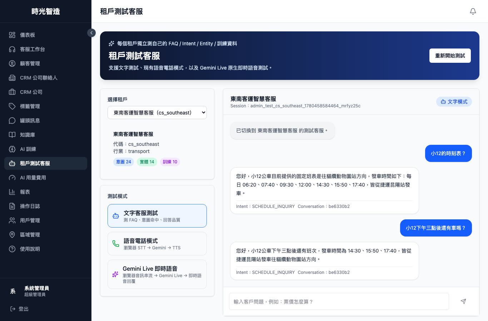
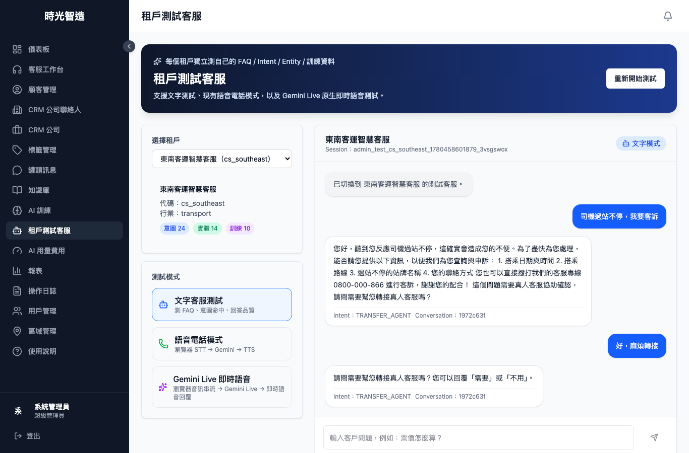

時光智造 AI 智能客服系統
從租戶建立、AI 訓練到測試上線的新版操作指南
更新日期：2026-06-03｜重點更新：AI 訓練、錄音分析、租戶測試客服、轉真人確認流程
第一部分：快速入門
1. AI 訓練 — 建立知識、意圖、實體與持續學習閉環
新版定位：AI 訓練不是只放 FAQ，而是把租戶客服能力拆成「知識庫 FAQ、意圖定義、實體收集、錄音分析、AI 學習」五個層次。建議先建立可維護的知識與意圖，再用錄音/未解答問題持續補強。
📚 FAQ 知識庫
放固定且可回答的內容，例如路線時刻表、遺失物流程、票卡處理方式。適合給 AI 直接引用。
🎯 意圖定義
定義使用者「想做什麼」，例如班表查詢、即時位置、客訴、遺失物、票卡扣款爭議。
🧩 實體收集
定義需要追問或擷取的欄位，例如路線、站牌、方向、日期、車號、聯絡電話、票卡卡號。
🎧 錄音分析
上傳客服錄音後，系統會分析主要問題，產生 FAQ / Intent / Entity / SOP 候選，供人工審核套用。
新版 AI 訓練建議流程：
- 第一步：建立租戶。每個客戶或品牌使用獨立租戶，資料隔離。
- 第二步：先補 FAQ。把確定答案放入知識庫；會變動或需人工確認的內容要標註限制。
- 第三步：整理意圖。把常見來電/訊息分類成可統計的意圖，避免全部落到 OTHER。
- 第四步：整理實體。把客服需要追問的關鍵欄位建成實體，例如路線、站牌、日期、方向、車號。
- 第五步：錄音分析。批次上傳錄音，等待分析完成後，在候選審核列表中套用有價值內容。
- 第六步：AI 學習。針對未解答與需轉真人問題，定期整理可補入 FAQ、意圖或實體的項目。
- 第七步：租戶測試客服驗證。每次修改後都要用文字/語音模式跑測試案例，確認不誤答、不誤轉。
AI 學習分頁處理方式：
- knowledge_gap：知識庫缺固定資料，例如「小12返程時刻表？」。應優先補 FAQ 或向客戶索取資料。
- realtime_required：需要官方即時資料，例如「現在小12到哪裡了？」。不應硬答固定答案，應引導官方動態或詢問是否轉真人。
- human_required：需要真人處理，例如客訴、扣款爭議、事故、臨時站建議。應先詢問是否轉真人，並收集必要欄位。
- user_requested_human：使用者主動要求真人客服。系統會直接轉人工，不再多問一次。
| 資料類型 | 適合放在哪裡 | 注意事項 |
|---|---|---|
| 固定答案 | FAQ 知識庫 | 例如固定班表、遺失物流程、客服電話。需要加上資料來源與更新日期。 |
| 分類目的 | 意圖定義 | 例如「查班表」「投訴司機」「票卡扣款爭議」。用於路由、統計與客服分析。 |
| 欄位資訊 | 實體收集 | 例如路線、站牌、方向、日期、車號、姓名、電話。個資只做收集欄位，不建議寫入 FAQ 答案。 |
| 不確定/即時 | AI 學習 / 真人確認 | 例如即時到站、臨時改道、未公開返程班表。不要讓 AI 推算，應查官方動態或轉真人。 |

2. 租戶測試客服 — 上線前必測文字、語音與轉真人流程
用途：「租戶測試客服」用來模擬真實客戶對話。每次新增 FAQ、意圖、實體或錄音訓練內容後，都應先在此頁測試，再交付客戶或現場 demo。
三種測試模式：
- 文字客服測試：直接輸入客戶問題，驗證 FAQ、Route RAG、意圖與轉真人判斷。
- 語音電話模式：瀏覽器語音辨識 STT → /widget/chat → TTS 播放，後端流程與文字模式一致，可驗證轉真人與 AI 學習。
- Gemini Live 即時語音：即時音訊串流體驗。可測語音回答內容；目前主要驗證「是否口頭詢問轉真人」，不作為後台 WAITING 狀態的唯一驗證。
標準測試步驟：
- 進入「租戶測試客服」。
- 選擇要測試的租戶，例如「東南客運智慧客服」。
- 點「重新開始測試」，確保每組案例使用新 session。
- 先跑正常問題，確認 AI 能回答且不轉真人。
- 再跑需真人場景，確認 AI 先詢問是否轉真人。
- 回覆「需要 / 好 / 可以」等確認詞，確認系統才真正轉人工。
- 回覆「不用」，確認對話維持 BOT，不進人工佇列。
- 測試完成後，若有進入人工佇列的測試對話，記得結案。
| 測試分類 | 建議測試語句 | 正確結果 |
|---|---|---|
| 正常回答 | 小12的時刻表？ | 回答固定班表，不詢問轉真人。 |
| 正常回答 | 小12下午三點後還有車嗎？ | 回答 15:50、17:40，不詢問轉真人。 |
| knowledge_gap | 小12返程時刻表？ | 說明缺固定返程班表，詢問是否轉真人；確認後才轉。 |
| realtime_required | 現在小12到哪裡了？ | 建議查官方動態，詢問是否轉真人；回不用則不轉。 |
| human_required | 司機過站不停，我要客訴 | 收集必要資訊，詢問是否轉真人；確認後才轉。 |
| user_requested_human | 我要找真人客服 | 使用者已主動要求真人，直接轉人工，不再多問一次。 |

正常流程：小12固定班表可直接回答，無須轉真人。

轉真人流程：客訴等人工作業場景，先詢問，確認後才轉。
3. 網站嵌入 Widget — 讓任何網站擁有 AI 客服
核心功能：只需一行代碼，即可讓任何網站擁有智能客服功能。右下角浮動聊天氣泡，自動載入租戶知識庫，手機友好。
Widget 特色：
- 極簡安裝：只需一行 JavaScript 代碼即可嵌入
- 浮動氣泡：右下角聊天氣泡，不影響網站原有設計
- 自動載入：根據租戶代碼自動載入對應的知識庫和訓練模型
- 響應式設計：完美支援桌面和手機版，自適應螢幕大小
- 可客製化：支援自定義主色調、位置等視覺設定
嵌入步驟：
- 從 AI 訓練頁面複製您的租戶代碼
- 將以下代碼貼到您網站的
</body>標籤前 - 將代碼中的「你的租戶代碼」替換為實際的租戶代碼
- 儲存並上傳網站文件
- 開啟網站即可看到右下角的聊天氣泡
基本嵌入代碼：
<script src="https://ai-customer-service.timux.site/widget.js" data-tenant="你的租戶代碼"></script>
<script src="https://ai-customer-service.timux.site/widget.js" data-tenant="你的租戶代碼"></script>
自定義選項：
<script src="https://ai-customer-service.timux.site/widget.js"
data-tenant="你的租戶代碼"
data-color="#3498db"
data-position="right"></script>
<script src="https://ai-customer-service.timux.site/widget.js"
data-tenant="你的租戶代碼"
data-color="#3498db"
data-position="right"></script>
可用選項：
data-color：主色調（如：#3498db）data-position：位置（right / left）data-tenant：租戶代碼（必填）
4. 渠道配置 — 連接你的通訊平台
核心功能：區域管理是配置渠道的地方，將 AI 客服連接到 LINE 等通訊平台。
操作步驟：
- 進入「區域管理」頁面
- 點擊「新增區域」或編輯現有區域
- 填寫 LINE Channel ID 和 Secret
- 選擇 AI 訓練集（綁定剛才建立的租戶）
- 設定工作時間和圖片選單
- 複製 Webhook URL 到 LINE Developers Console

5. 客服工作台 — 即時接管 AI 對話
核心功能：當 AI 無法回答或客戶需要人工服務時，客服人員可以在工作台接管對話。
操作步驟：
- 進入「客服工作台」頁面
- 左側顯示等待中的對話佇列（按優先級排序）
- 點擊任意對話即可接管，AI 暫停回覆
- 使用右側罐頭訊息快速回覆
- 對話結束後點擊「關閉對話」並選擇歸類

第二部分：ERP 管理功能
5. 儀表板 — 全局數據概覽
一站式查看關鍵指標：今日對話數、等待中對話、客服在線數、平均響應時間等。支援時間段篩選和趨勢圖表。

6. 顧客管理
管理所有來訪的顧客資訊，包括來源渠道、對話記錄、標籤分類。支援搜尋和篩選。

7. CRM 聯絡人
維護商務聯絡人資訊，關聯所屬公司，記錄跟進備註。支援匯入匯出。

8. CRM 公司
管理合作企業資料，包括行業、網站、聯繫方式、地址等。每家公司可關聯多個聯絡人。

9. 標籤管理
建立和管理標籤，用於對顧客、對話進行分類。支援自定義顏色。

10. 罐頭訊息
預設常用回覆模板，客服人員在工作台可一鍵使用。支援分類和快捷鍵設定。

11. 知識庫
FAQ 知識庫管理，支援按分類組織。AI 可參考知識庫內容回覆客戶問題。

12. 報表
查看客服績效數據：對話量趨勢、響應時間、客戶滿意度、客服效率排名等。

13. 操作日誌
記錄系統所有操作行為，支援按操作類型和時間篩選，確保安全稽核可追溯。

14. 用戶管理
管理系統用戶帳號和權限。支援三種角色：超級管理員、區域管理員、客服人員。可建立客服組別分配。